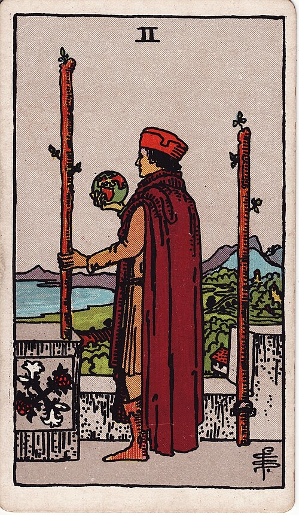

| Arcana | Minor |
| Suit | Wands |
| Element | Fire |
| Attribution | Mars in Aries |
Two of Wands
In shortYou have a plan. Now decide how far to take it.
Upright
The first spark has turned into a plan with a horizon on it. You have something real in hand and you are working out how big to go. There is a choice here between the safe territory you already handle well and something larger and riskier. The card generally favours looking outward.
Reversed
The world stays small. This is a plan endlessly refined instead of launched, an expansion talked about for years, or honest fear of leaving somewhere you are already good at. Occasionally it is the reverse — a leap taken with no plan behind it at all.
The turn
Set the horizon date. A plan without a departure time is a daydream.
Reading with your own deck?
Sage records the cards you actually pull, writes the reading, keeps every one, and shows you what keeps returning across them. Free, private, no account.